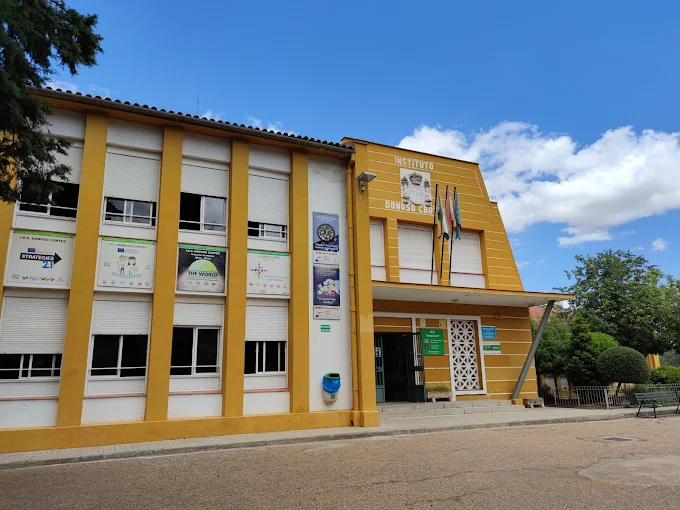
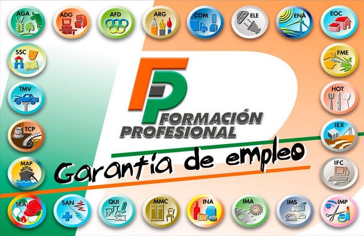

IES DONOSO CORTES
El IES Donoso Cortés es un centro educativo público ubicado en la localidad de Don Benito, en la
provincia de Badajoz (Extremadura). Es uno de los institutos con mayor tradición del municipio y
destaca por su ambiente cercano, su compromiso con la educación integral del alumnado y su
participación activa en la vida cultural y social de la ciudad.
El centro ofrece enseñanzas de Educación Secundaria Obligatoria (ESO) y Bachillerato, con
diferentes modalidades orientadas tanto a las ciencias como a las humanidades y ciencias
sociales. Además, el instituto apuesta por metodologías actuales, el trabajo cooperativo y el
uso de las nuevas tecnologías en el aula.
El IES Donoso Cortés promueve valores como el respeto, la responsabilidad, la igualdad y la
convivencia positiva. Para ello, desarrolla proyectos educativos, actividades complementarias,
jornadas culturales, intercambios y participación en programas de innovación educativa.
Su profesorado se caracteriza por la cercanía con el alumnado y por el esfuerzo en ofrecer una
enseñanza de calidad que favorezca tanto el crecimiento personal como el académico. El instituto
dispone de biblioteca, laboratorios, aulas específicas, instalaciones deportivas y espacios
habilitados para actividades creativas y de estudio.

Educarex
Educarex es el portal educativo de la Junta de Extremadura, diseñado para proporcionar recursos,
información y servicios relacionados con la educación en la región. Su objetivo principal es
apoyar a estudiantes, docentes, familias y centros educativos en el proceso de
enseñanza-aprendizaje.
El portal ofrece una amplia variedad de recursos educativos, incluyendo materiales didácticos,
guías para docentes, actividades interactivas y herramientas tecnológicas que facilitan el
aprendizaje tanto en el aula como en entornos virtuales. Además, Educarex proporciona
información sobre programas educativos, convocatorias, becas y eventos relacionados con la
educación en Extremadura.
Educarex también sirve como plataforma de comunicación entre los diferentes actores del sistema
educativo, permitiendo a los usuarios acceder a noticias, novedades y actualizaciones
relevantes. Asimismo, fomenta la participación activa de la comunidad educativa a través de
foros, blogs y redes sociales.
Formación Profesional en Extremadura
La Formación Profesional (FP) en Extremadura es una opción educativa que ofrece a los
estudiantes la oportunidad de adquirir conocimientos y habilidades prácticas en diversas áreas
profesionales. La FP está diseñada para preparar a los alumnos para el mundo laboral,
proporcionando una formación técnica y especializada que responde a las demandas del mercado de
trabajo.
En Extremadura, la FP se imparte en centros educativos públicos y privados, ofreciendo una
amplia gama de ciclos formativos de grado medio y grado superior en sectores como la
administración, la informática, la salud, la hostelería, la agricultura, entre otros. Estos
programas combinan teoría y práctica, incluyendo períodos de formación en empresas para
facilitar la inserción laboral.
La FP en Extremadura está orientada a fomentar la empleabilidad y el desarrollo profesional de
los estudiantes, adaptándose a las necesidades del tejido empresarial regional. Además, se
promueve la innovación educativa y el uso de nuevas tecnologías para mejorar la calidad de la
enseñanza.

Grados de formación profesional que se ejercen en Extremadura
En Extremadura, se ofrecen diversos grados de Formación Profesional (FP) que abarcan una amplia
gama de sectores y especialidades. Algunos de los grados más comunes incluyen:
1. Administración y Gestión: Ciclos formativos relacionados con la administración de empresas,
gestión financiera, recursos humanos y contabilidad.
2. Informática y Comunicaciones: Programas enfocados en el desarrollo de software, redes,
sistemas informáticos y soporte técnico.
3. Sanidad: Ciclos formativos en cuidados auxiliares de enfermería, farmacia, radioterapia y
otras áreas relacionadas con la salud.
4. Hostelería y Turismo: Formación en gestión hotelera, cocina, servicios en restauración y
turismo.
5. Agricultura y Medio Ambiente: Programas centrados en la producción agrícola, jardinería,
gestión ambiental y desarrollo rural.
6. Electricidad y Electrónica: Ciclos formativos en instalaciones eléctricas, mantenimiento
electrónico y automatización industrial.
7. Mantenimiento de Vehículos: Formación en mecánica automotriz, reparación y mantenimiento de
vehículos.
8. Artes Gráficas: Programas relacionados con el diseño gráfico, impresión y producción
audiovisual.